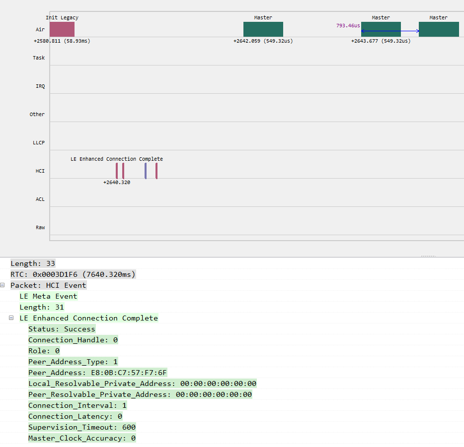
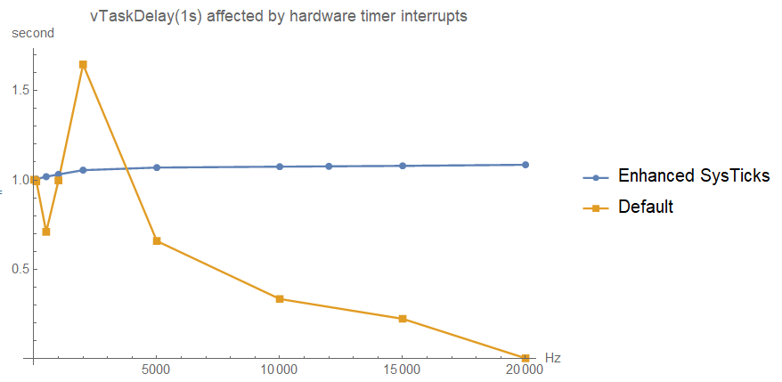
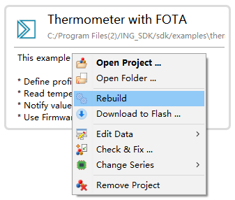
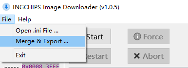

SDK 6.4 & 6.5 增加了一系列新功能。
Highlights:
- 最小连接间隔 800μs，比 友商 缩短 20%；
- 一个函数完成 FOTA 升级
1. 软件包 (Bundles)
1.1 Controller
-
[更新] 最小连接间隔 1.25ms (6.5.0)
SDK 4.0 里引入了 更小的连接间隔 的扩展功能，现在最小连接间隔进一步缩减到 1.25ms。
使用
extension包创建主、从两个程序。主设备调用gap_ext_create_connection建立连接时， 将interval_min和interval_max两个参数设置为1，就可以创建 1.25ms 间隔的连接。 -
[新增] 以 1ms 为单位的连接间隔 (6.5.0)此功能在 6.5.1 里修改了实现方式。
-
[新增]
ll_set_conn_interval_unit(6.5.1)在使用
extension包的程序里调用ll_set_conn_interval_unit(X)可将连接间隔的时间单位从 1.25ms 切换为 X μs。主、从两个程序里都调用
ll_set_conn_interval_unit(X)，并在调用gap_ext_create_connection建立连接时将interval_min和interval_max两个参数设置为1， 就可以创建 X μs 间隔的连接。X 的最小值受限于空口时长及处理器速度，下面的截图显示了 X = 800 的情况。 可以看出建立连接后的第 1 个连接事件后协议栈需要处理的工作较多，以至于无法按时调度第 2 个连接事件。 后续连接事件调度正常。（Trace 采用的时间戳来自 32k 时钟，误差 ±30 μs）
注意：仅在计算连接间隔时将单位从 1.25ms 变为 X μs。修改后，无法保证各消息、事件参数之间的“一致性”。 采用非标连接间隔后，空口抓包工具可能无法正常捕获数据。 -
[更新] 最多 26 个连接 (6.5.0)
mass_conn软件包支持的最大连接数从 24 个提升到 26 个。注意：白名单（可接受名单）的最大长度仍为 24。
Host - SM 模块
-
[新增] Trace 功能 (6.4.0)
遇到配对相关问题时可以抓取模块内部信息离线分析。
1.5 FreeRTOS 相关
-
[新增] SysTick 增强 (6.4.0)
ING918xx 退出睡眠状态重新配置
SysTick时可能会引入（均值） 0.5 个 32k 时钟周期的误差。 当这种情况频繁出现时，SysTick上的累积误差显著。SysTick 增强功能可以在很大程度上控制这种累积误差。通过
platform_config(PLATFORM_CFG_RTOS_ENH_TICK, PLATFORM_CFG_ENABLE)启用此功能。 下图演示了当一个硬件定时器以一定频率产生中断时，对vTaskDelay(1s)实际时长的影响。
注意：此功能需要与 32k 时钟同步，对功耗存在一定的影响。
2. 工具
2.1 Wizard
-
[新增] 快捷编译 (6.5.0)
从右键快捷菜单里直接重新编译项目：

2.2 Downloader
-
[新增] 文件合并 (6.5.0)
将项目里的多个二进制文件合并为一个，下载地址为
Min(各文件的下载地址)。
2.3 兼容性
SEGGER Studio 新的链接器 (V3.0+) 与老版本存在兼容性问题，SDK 6.5.0 生成新项目转为使用 GNU 链接器。
3. 示例
-
[新增] Central FOTA (6.4.0)
这个示例演示了如何作为中心设备对其它设备进行空中升级。使用 Zig 语言 将整个 FOTA 过程封装成
fota_client_do_update：/** * @brief FOTA client. * * @param latest latest version (a.k.a this version) * @param conn_handle connection handle * @param handle_ver handle of INGCHIPS_UUID_OTA_VER * @param handle_ctrl handle of INGCHIPS_UUID_OTA_CTRL * @param handle_data handle of INGCHIPS_UUID_OTA_DATA * @param item_cnt number of binaries (<= MAX_UPDATE_BLOCKS) * @param items information for each binary * @param entry entry address * @param on_done callback when FOTA completes (err_code != 0 if error occurs) * */ void fota_client_do_update(const ota_ver_t *latest, uint16_t conn_handle, uint16_t handle_ver, uint16_t handle_ctrl, uint16_t handle_data, int item_cnt, const ota_item_t *items, uint32_t entry, void (* on_done)(int err_code));可以集成到其它需要对其它设备进行 OTA 的程序中，使用方便。
-
[修正] Mesh Light (6.5.1)
修正了 Mesh Light 在 nRF Mesh iOS 版本下的问题。 现在 Mesh Light 同时兼容 nRF Mesh 的 Android 及 iOS 版本。